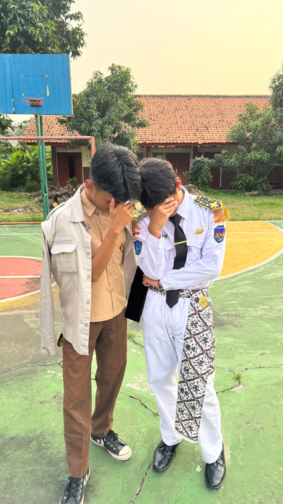
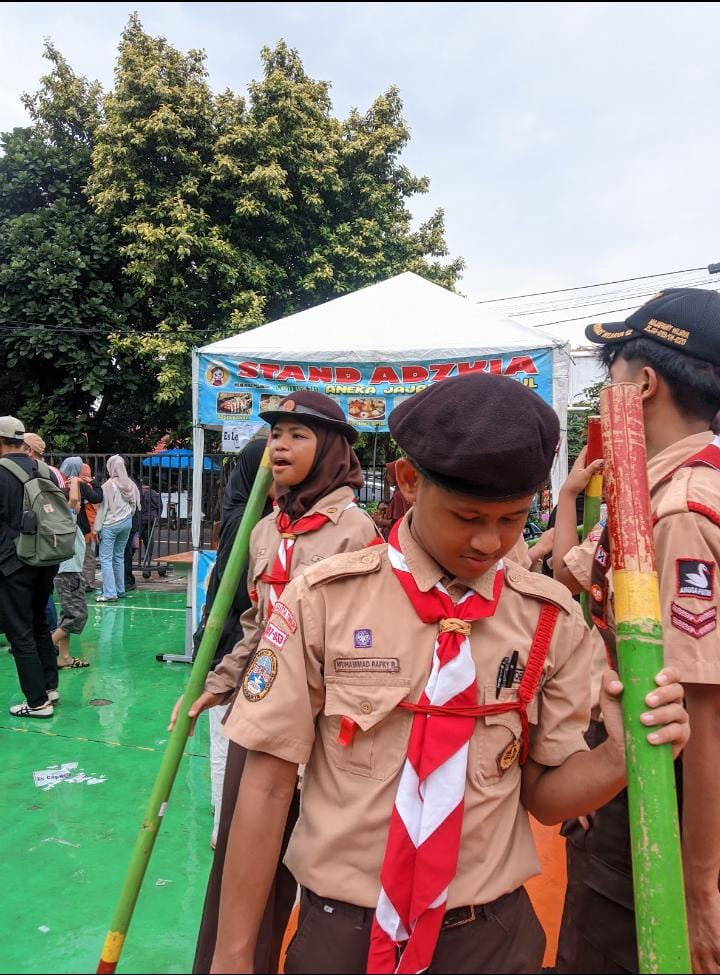
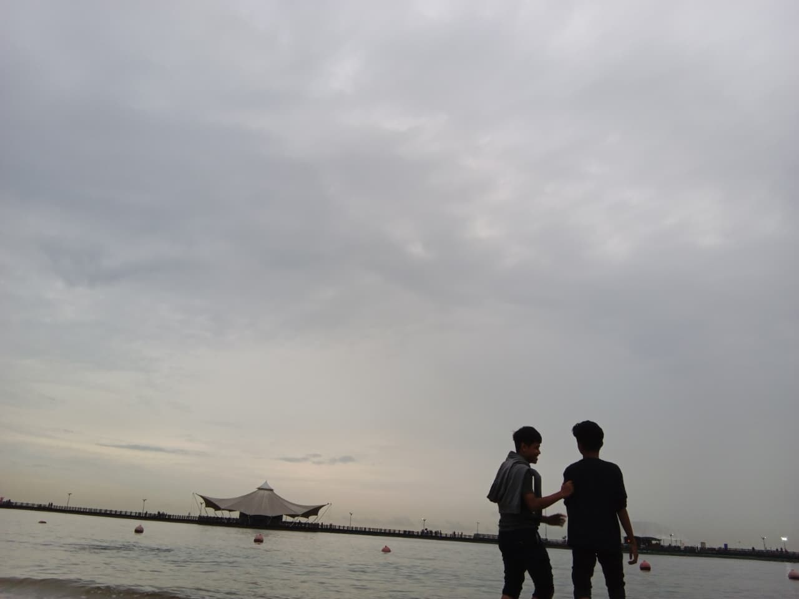
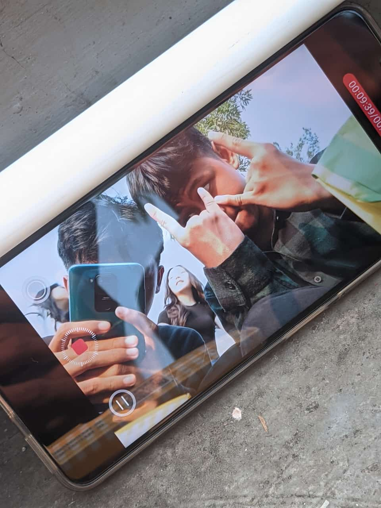
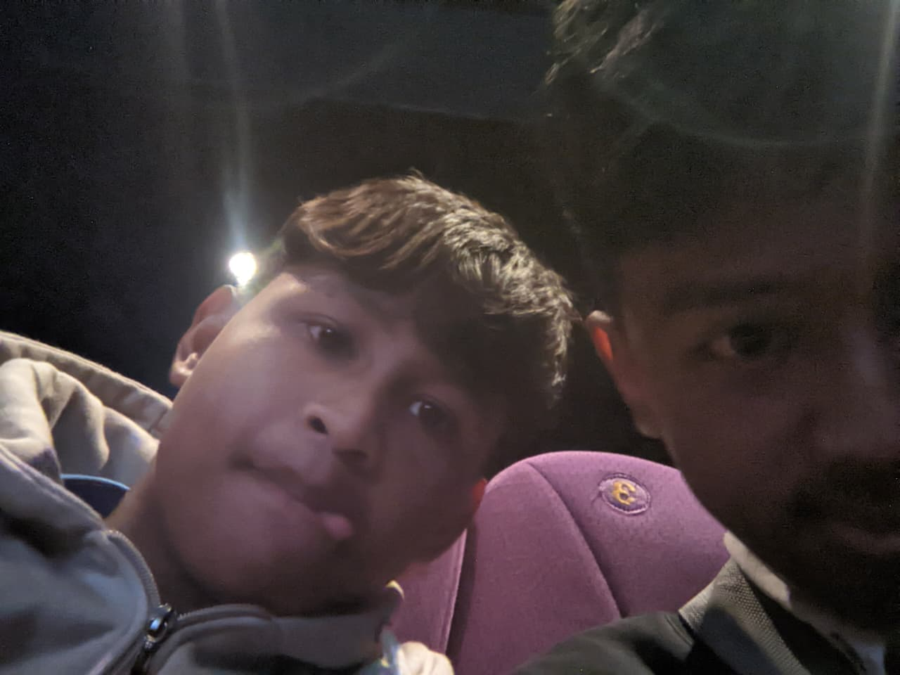
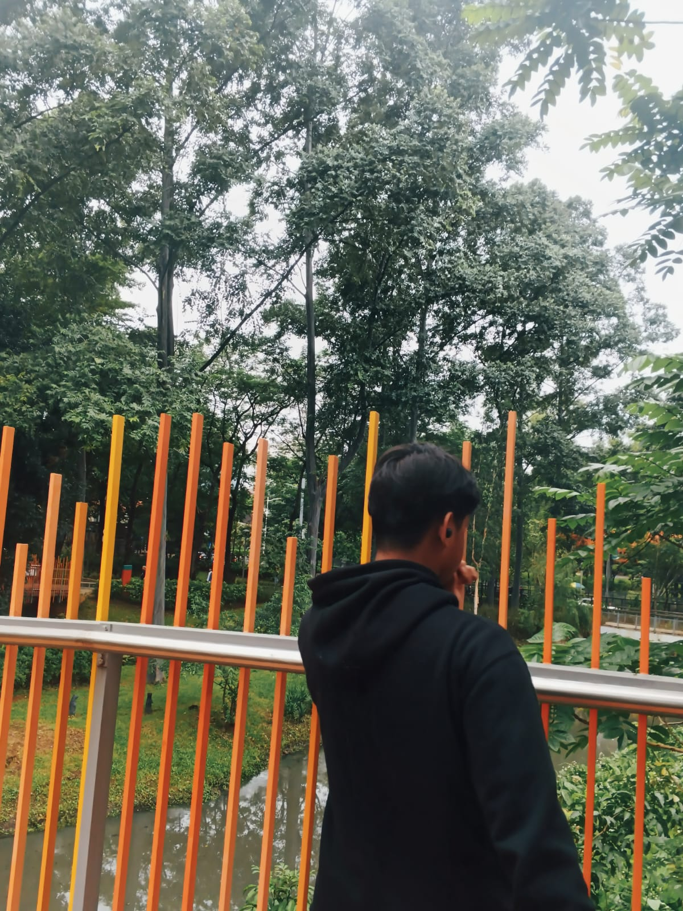
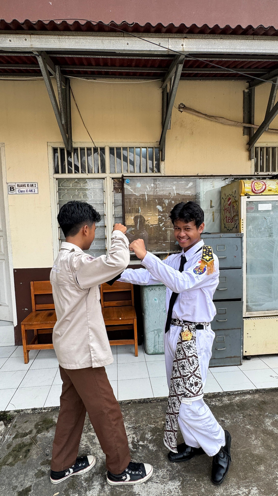
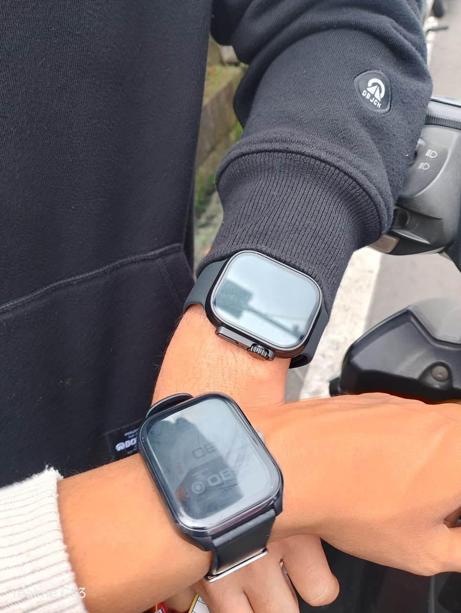
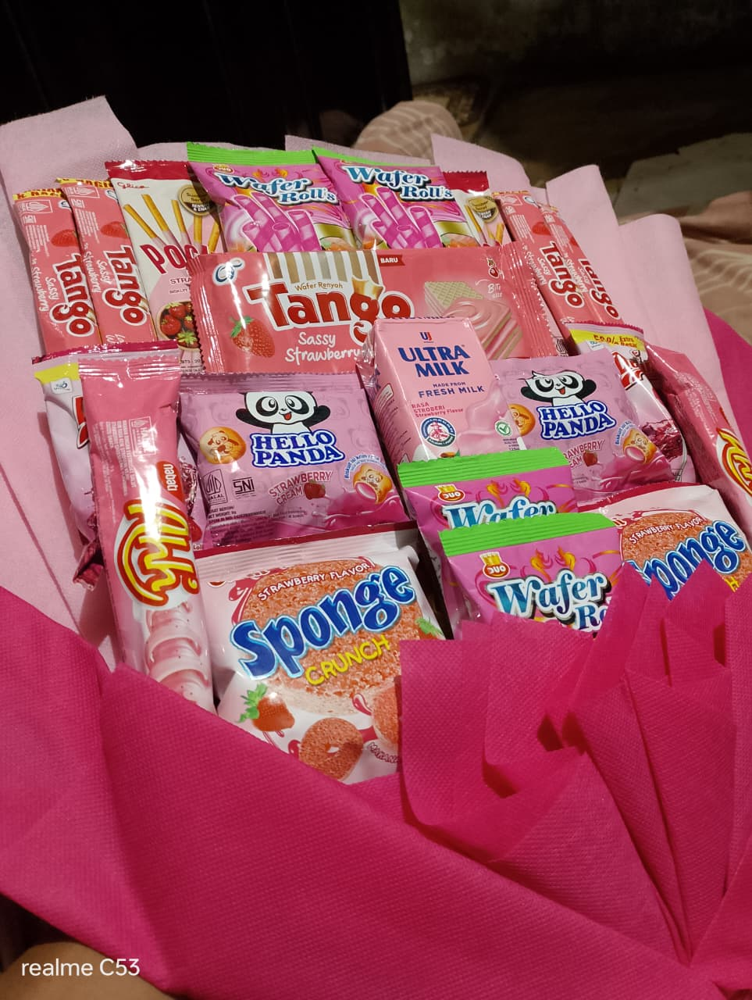
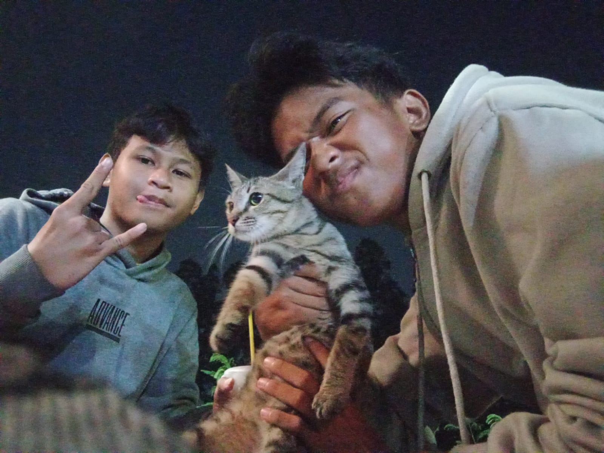

Inget gak ini pas pertama kalinya aku nemenin kamu? aku bangga banget tau!

Muka kamu lucu banget di sini, apalagi pas tampil lomba, gemes!

Moment kita ngelupain kejadian di klender ituu, lucu yaa??

Terima kasih ya sudah sabar sama aku ❤️

Senyum kamu favorit aku selamanya.

Setiap detik bersamamu itu berharga.

I'll stay by your side, no matter what.

Hehe, inget gak kita ketawa gara-gara ini?

365 hari yang luar biasa bersamamu.

Happy 1st Anniversary, Sayang! ❤️